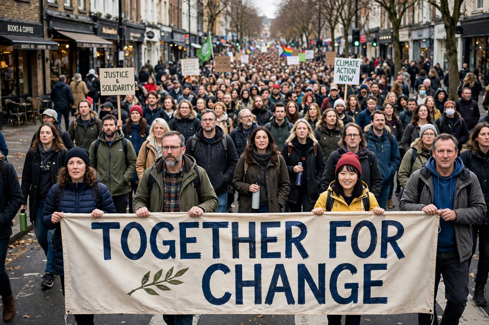

Collective action refers to action taken together by a group of people whose goal is to achieve a common objective and enhance their status. It is a term used across the social sciences, including sociology, political science, economics and psychology, to describe everything from a neighbourhood clean-up to a general strike or revolution.

In The Logic of Collective Action (1965), economist Mancur Olson argued that rational individuals may not act to achieve their common interests when the benefit is a public good available to everyone whether or not they contribute. This gives rise to the free-rider problem: each person has an incentive to let others bear the costs. Olson suggested large groups need selective incentives — private benefits or penalties — to mobilise, while small groups can cooperate more easily.
Later research, notably by Elinor Ostrom on governing common-pool resources, showed that communities often devise rules, monitoring and graduated sanctions that sustain cooperation without central authority. Social norms, trust, identity and repeated interaction also help groups overcome free-riding.
Forms of collective action include trade union organising and strikes, grassroots campaigns, social movements, boycotts such as the consumer boycott, petitions, and online mobilisation. Political scientist Charles Tilly studied repertoires of contention — the historically available set of tactics groups use.